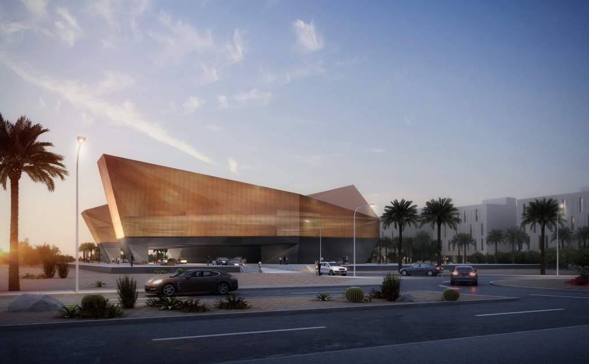
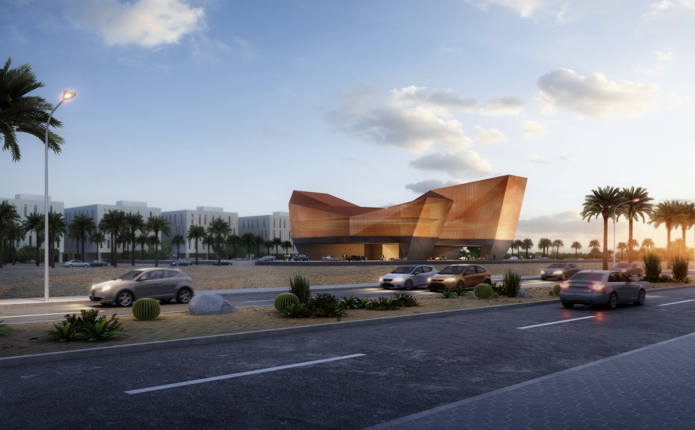

MUBARAK AL KABEER PORT


Mubarak Al Kabeer Port on Boubyan Island is one of Kuwait's most significant infrastructure investments, conceived to establish a world-class maritime logistics hub. The project's scale and technical complexity demanded rigorous BIM implementation across marine structures, operational buildings, utilities, and external works. The BIM consultancy role involved the development of coordinated models and the management of information delivery across a large multi-disciplinary project team.
